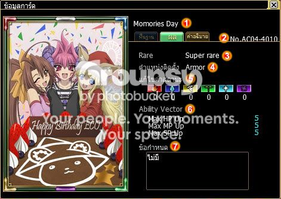
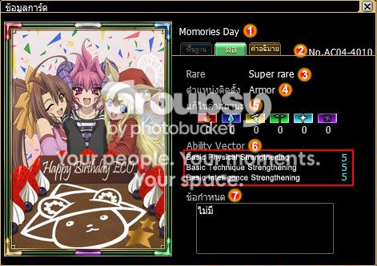
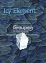

Reply เพื่อปรับความเข้าใจ
ยินดีต้อนรับทุกท่านเข้าสู่ภาษาถ้วย Version ใหม่ รอบนี้ทำเราๆเข้าใจผิดกันไปถ้วนหน้า
ดังนั้นผมจะขอชี้แจงซักหน่อยว่า คำพูดและฟังก์ัชั่นต่างๆใน
Iris card ซึ่งปรากฎในเซิร์ฟไทยก่อให้เกิดความเข้าใจผิดตรงไหน และจริงๆแล้วมันเป็นอย่างไร
มาเริ่มกันเลยครับ
ข้อมูลการ์ดที่ปรากฎในเซิร์ฟไทย
ลองเปิดดูข้อมูลการ์ดซักใบ จะเห็นลักษณะแบบนี้ครับ

ตีความตามคำพูดเลย เรามาไล่กันทีละส่วนเริ่มจาก
1. ชื่อการ์ด(Card name) อันนี้ไม่มีปัญหาอะไร การ์ดแต่ละใบมีชื่อของมันซึ่งสื่อความหมายตามรูปทางด้านซ้ายได้ดี
2. หมายเลขการ์ด ก็คงไม่ต้องสนใจอะไรมากนัก ไม่น่ามีปัญหาอะไร
3. มันคือระดับความหายากของการ์ดใบนั้น มีอยู่ 4 ระดับ เรียงจากหายากไปง่ายดังนี้
Super Rare[SR]>>>
Rare[R]>>>
Uncommon [UC]>>>
Common[C]
4. ตำแหน่งที่ติดตั้ง ก็ตรงตัวครับ อยู่ได้ 3 ที่คือ Chest/Armor/Weapon
5. ค่าแ้ก้ไขสถานะ ดูจาก รูปแล้วก็เข้าใจได้ไม่ยาก มันคือส่วน Element Correction(EC) ใน Part III นั่นเอง
6. Ability Vector ใส่สีไว้แบบนี้ก็ชัดเจนครับว่ามัน "ผิด"
เมื่อมองดูจากการ์ดแล้ว Memories Day ใบนี้มี Ability Vector อยู่ 3 บรรทัดคือ
Max HP up / Max MP up / Max SP up
แล้วก็มีตัวเลขด้านหลังอยู่เป็น 5 ทั้งหมด
ถ้าตีความลอยๆจากการ์ดมันจะหมายถึงอะไรล่ะ การ์ดใบนี้ั้นั้น
ช่วยเพิ่ม Max HP up ได้ 5 รึ? แล้วมัน 5 อะไรกัน 5% รึว่า +5
ส่วนของ SP และ MP ก็ 5 เหมือนกัน แล้วมันเป็น 5 อะไรกันแน่!? งงล่ะสิ แล้วมันคืออะไรกันแน่เนี่ย!!

7. ข้อกำหนด ยังไม่มีอะไร ผ่านไปก่อน
ข้อมูลการ์ดที่แท้จริง
มาถึงของจริงกันบ้าง ว่าส่วนต่างๆในการ์ดนั้นแท้จริงแล้วเป็นยังไง มาไล่กันดูแล้วเทียบกันทีละส่วนนะครับ
1. ชื่อการ์ดนั้นไม่มีปัญหาอะไรนัก อาจจะมีเขียนผิดบ้างบางชื่อ แต่ก็ไม่ได้กระทบกระเทือนอะไร
2. รหัสการ์ด มาดูกันซักหน่อยละกันครับว่ามันหมายถึงอะไรบ้าง
รหัสการ์ดนั้นจะีมีั format เป็น ACSS-XYYZ ครับ
ACSS นั้นบอกถึง "set ของการ์ด" ซึี่งปัจจุบันมีเพียงสอง set คือ AC01(เปิดจากดาวทาวน์) และ AC04(เปิดจากเมืองใต้)
ด้านของ XYYZ นั่นจะบอกถึงชนิดและประเภทของการ์ดครับ โดยที่
- X จะบอกถึง "ประเภท" การ์ด โดยเลข 4 จะหมายถึงพวก Super Rare[SR]
5 จะหมายถึงพวก Rare[R]
6 จะหมายถึงพวก Uncommon [UC]
และ 7 จะหมายถึงพวก Common[C] นั่นเอง
- YY จะบอกว่าการ์ดใบนั้นเป็นการ์ดใบที่เท่าไหร่ของ set โดยเริ่มจาก 01 ไปเรื่อยๆ และเหมือนเปลี่ยนประเภท(เปลี่ยนความ rare) จะนับ 01 ใหม่
- Z บ่งบอกถึงระดับของการ์ด ถ้าเป็นการ์ด No rank ตัว C จะเป็น 0
ที่ R1 จะมี Z=1 ที่ R2 จะมี Z=2 ที่ R3 จะมี Z=3 และที่ R4 จะมี Z=4 ครับ
ตัวอย่าง:
การ์ดที่ผมยกมานั้น... มีรหัสว่า AC04-4010
ความหมาย... การ์ดใบนี้อยู่ในเซ็ต AC04(ครบรอบ 4 ปีเกมของยุ่น) เป็นประเภท Super Rare[SR] (4) ใบแรกของกลุ่มนี้(01) และยังเป็นการ์ด No rank อยู่(0)
3. ระดับความหายาก เหมือนเดิม 4 ระัดับที่พูดไปข้างบนครับ
4. ตำแหน่งติดตั้ง ก็มี 3 ที่เช่นเดิม ของเราถูกแล้ว
5. ตรงนี้แหละครับสำคัญ
จริงๆแล้ว ข้อมูลการ์ดในส่วนของ AV มันต้องเขียนแบบข้างล่างนี่

จะเห็นว่าการ์ดใบนี้จริงๆแล้วมี AV อยู่ 3 ชนิด คือ
1. Basic Physical Strengthening
2. Basic Technique Strengthening
3. Basic Intelligence Strengthening
แต่ละ AV มีค่า "เวกเตอร์" อย่างละ 5 หมดเลย ผลที่เกิดขึ้นให้ดูในตารางนี้ครับ (จาก Part V)


สังเกตจั่วหัวตารางครับ
ช่องสีเหลือง คือค่า RLv เหมือนบอกว่าเราได้ stat เวลอะไรหลุดออกมาจากการใส่การ์ด
ส่วนอันล่าง
ช่องสีเทา จะบอกถึง "ค่าเวกเตอร์รวม" ว่าถ้าึถึงเท่าไหร่แล้วจะได้ค่า RLv แค่ไหน จากนั้นไปดูอีกทีว่าการ์ดส่งผลอะไรให้เราจากส่วนของ RA(ตารางคอลัมน์ที่ 2)
ดังนั้นถ้าผม "ยัด" การ์ดใบนี้ลงไป จะได้ทันทีว่า... ผมมี AV 3 ค่าโดยแต่ละค่าแสดงผลที่ RLv=1 (เพราะเวกเตอร์ยังไม่ถึง 30 ได้ RLv แค่ 1)
และผลที่แสดงออกมาก็คือ (ดูตาราง) Increase Max HP +50 / Increase Max SP +30 / Increase Max MP +30 ครับ
ยังไม่หมดครับ มาดูความถ้วยของมันต่ออีก 1 ตัวอย่าง
ขอบคุณรูปจากคุณ NaTee

จะเห็นความถ้วยอยากชัดเจนในส่วนของ Ability Vector ด้านขวาล่างครับ
ชื่อ AV มั่วอย่างที่กล่าวไปแล้ว ส่วนของ RA นั่น ... หายไปไหน! ว่างเปล่าเขียนไว้แต่ตัวเลข

งั้นมาดูกันจริงๆดีกว่า ว่ามันยังไงกันแน่
จาก รูป คุณ NaTee ยัดการ์ดลงไป 4 ใบ ได้แก่
Pururu[R2] / October(Halloween)[R1] / ODwar Town[R1] / Dumpty Island[R1] โดยแต่ละใบ เมื่อเปิดดูข้อมูลจาก Part VI จะพบว่า
-
Pururu[R2] ให้ AV เป็น
Basic Physical Strengthening ที่ค่า Vector=20
-
October(Halloween)[R1] ให้ AV เป็น
Basic Physical Strengthening ที่ค่า Vector=8
-
ODwar Town[R1] ให้ AV เป็น
Basic Physical Strengthening ที่่ค่า Vector = 15
-
Dumpty Island[R1] ให้ AV เป็น
Giant Killing ที่่ค่า Vector = 11
โดยรวมแล้ว การ์ด 4 ใบนี้จะให้ AV เป็น
Basic Physical Strengthening ที่ค่า Vectorรวม =43 และ
Giant Killing ที่่ค่า Vectorรวม = 11
เอาไปดูค่า RLv จาก Part III จะพบว่า
Basic Physical Strengthening มี RLv=2 และ
Giant Killing มี RLv=1
ทีนี้ดูตาราง
 Basic Physical Strengthening
Basic Physical Strengthening ที่ RLv=2 ได้
Increase Max HP +50 / Increase HP recovery rate 5%
Giant Killing ที่ RLv=1 ได้
Decline Reducing S.hit by lv. differentiation 10%
นั่นคือผลที่แสดงออกมาของการ์ดครับ หรือถ้าจะแก้ให้ข้อมูลการ์ดถูกต้องจะต้องเป็นแบบนี้

เกมเรายังคงรักษาความถ้วยต่อไปนะเนี่ย~
แก้เถิดคร้าบจีเอ็ม T T
แบบนี้คนเข้าใจผิดกันเยอะนา
ของแถม....
มินิบอสตัวใหม่ที่อยู่ในดันไทนี่

พวกนี้ตก Blank Iris UC เน้อ